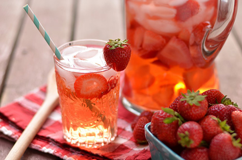

Kışın görmezden geldiğimiz kilolar, yazın gelişiyle sorun olmaya başlar. Aslında kışlık ve yazlık kilo mücadelesi yerine daima kontrollü olmak son dakikaya bırakmamak daha önemlidir. Acilen zayıflama telaşı yaza formda girmenizi sağlayabilir ama kalıcılığı
ile ilgili önlemler de unutulmamalıdır.
Öncelikle2-3 litre su içmeyi unutmayın. Şekerli, gazlı, kolalı soğuk içecekler yerine; suyunuza katacağınız mevsim meyveleriyle hem görüntüsü hem aroması su içme isteğinizi artıracaktır.

İlkbahar ve yaz sebzeleri enginar, domates, biber, kabak, salatalık, patlıcan, bamya, taze fasulye, barbunya, börülce, semizotu, ıspanak, yabani otlar hem hazırlama kolaylığı hem tüketirken bize verdiği ferahlık sayesinde sofralarımızın baş
tacı olmalı. Sebzelerinizi mümkün olduğunca az pişirin. Bol bol salata yapıp içine proteinden zengin kuru baklagiller ile veya yumurta, birkaç parça et, peynir çeşitleri ekleyerek daha doyurucu bir hale getirebilirsiniz. Sebze ve meyveleri farklı
renklerde tüketmeye gayret edin. Renkler meyve ve sebzelerin içerdikleri güçlü antioksidanların göstergesidir. Güneşin zararlı etkilerine karşı da kalkan görevi vardır.
Pişirme yönteminiz çok sağlıklı bir besinin dahi size zarar vermesine neden olabilir. Besinlerinizi tencere usulü-haşlayarak, fırında veya ızgara yaparak hazırlayın. Et, tavuk ve balık tüketirken kızartmadan kaçının. Et ürünlerini yanında bol
sebze ile tüketin.
Yaz aylarının en sevilen tatlısı dondurmayı 1 topdan fazla yemeyin. Doğal ve az şekerli olanları tercih edin. 1 top dondurmayı 1 porsiyon meyve yerine tüketin.
Günde 3-4 öğün yeterli olacaktır. Acıkmadan yemek yemeyin. Özellikle deniz kenarında sıcak saatlerde hafif beslenin. Çoğu kez 1 kase yoğurt içine doğranmış mevsim meyveleri, 3-4 parça ceviz,fındık, badem gibi çiğ kuruyemiş,1 yemek kaşığı keten
tohumu veya chia tohumu sizi 2-3 saat tok tutmaya yetecektir.
Hamur işlerinden, pastane ürünlerinden uzak durarak ve bunu yeni beslenme alışkanlığı haline getirerek, yaza özel değil her zaman formada kalmanız mümkün.
Yaz aylarının en önemli besin kaynağı güneşin özellikle sabah ışıkları. D vitamini depolarınızı dolduran yaz güneşinden faydalanmak dışarıdan aldığımız besinlerin vücudumuzda kullanımını kolaylaştıracağını unutmayın.